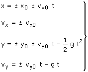

| Ecuaciones del tiro

| x |
Componente horizontal de la posición
del móvil en cada instante (Variable)
El alcance es el valor absoluto del desplazamiento horizontal hasta
llegar al suelo: |x - x0|
|
| x0 |
Componente horizontal de la posición del
móvil en el instante t = 0 (Parámetro) |
y |
Componente vertical de la posición
del móvil en cada instante (Variable) |
y0 |
Componente vertical de la posición del móvil
en el instante t = 0 (Parámetro) |
| vx |
Componente horizontal de la velocidad del móvil
en cada instante (Variable) |
| vx0 |
Componente horizontal de la velocidad del móvil
en el instante t = 0. Normalmente se expresa en función del
módulo de la velocidad inicial: v0 y del ángulo
de tiro: α (Parámetros) |
| vy |
Componente vertical de la velocidad del móvil
en cada instante (Variable) |
| vy0 |
Componente vertical de la velocidad del móvil
en el instante t = 0. Normalmente se expresa en función del
módulo de la velocidad inicial: v0 y del ángulo
de tiro: α (Parámetros) |
g |
Aceleración de la gravedad (Parámetro) |
| t |
Tiempo (Variable)
Cuenta desde 0 hacia adelante |
Signos
No se pone signo a las variables x, vx, y, vy pues
estas lo llevan incluido. Cuando sean incógnitas, al despejarlas
se obtendrá el valor con su signo y cuando sean datos habrá
que sustituir la variable por el valor con su signo
Hay que poner signo a los parámetros x0, vx0,
y0, vy0, g pues estos representan módulos
de las correspondientes magnitudes |